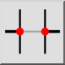
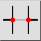
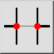
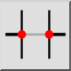

Разломать сегмент
Панель инструментов / Иконка:
 

Меню: Модификация > Разломать сегмент
Горячая клавиша: D, 2
Команды: break | breakout | d2
Это автоматический перевод.
Панель инструментов / Иконка:
 

Меню: Модификация > Разломать сегмент
Горячая клавиша: D, 2
Команды: break | breakout | d2
Divides entities by cutting out a segment that is limited by intersecting entities.
Choose the entity you want to divide by clicking the segment you want to cut out. The segment is removed automatically if the check box "Remove Segment" is checked. If not, the entity is only cut at the intersections without removing the segment.